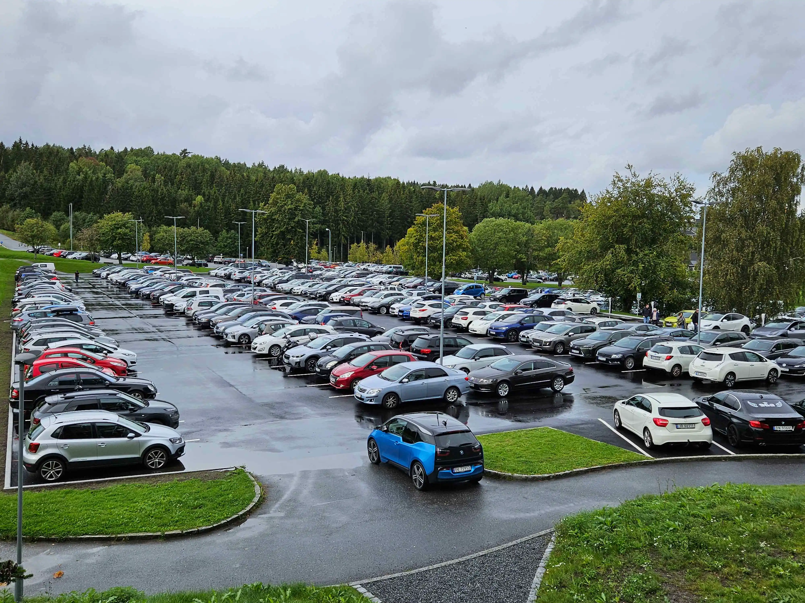
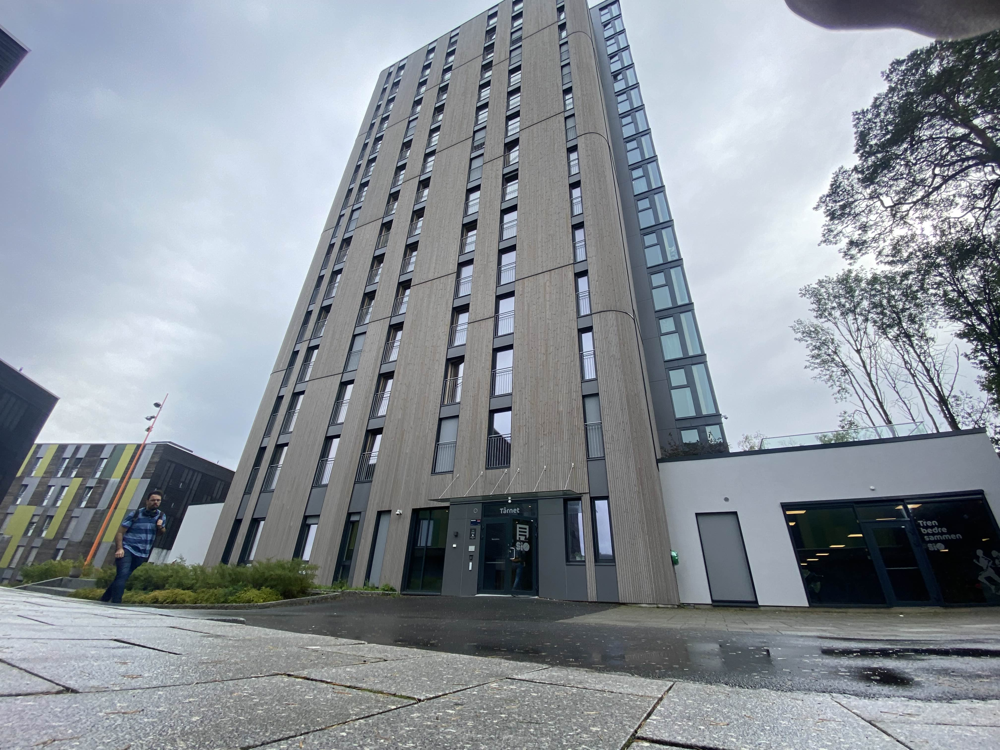

Pendlingens utfordringer: Studentlivet ved Høgskolen i Halden
Studenter ved Høgskolen i Halden står overfor store utfordringer knyttet til pendling til skolen, da mange bor i nærliggende byer som Sarpsborg, Fredrikstad og Moss. Lang reisetid, kostbare transportutgifter og mangelfullt kollektivtilbud gjør at mange må bruke store deler av både tid og studielån på transport – noe som påvirker både økonomi og studiehverdag. Gjennom samtaler med flere studenter får vi et innblikk i hvordan pendlingen påvirker hverdagen deres, og hvilke løsninger de mener kan lette situasjonen.
Lang reisevei og dårlig kollektivtilbud
Wiktoria Raszkowska, en 23 år gammel student som studerer internasjonal kommunikasjon, pendler daglig fra Sarpsborg til Halden med buss. Reisen tar henne mellom 1,5 og 2 timer hver vei, og hun betaler rundt 500 kroner i måneden for transporten. Selv om hun ikke klager på kostnadene, beskriver hun et busstilbud som langt fra er optimalt.
– Bussene er ofte forsinket, og det er få avganger. Dette resulterer i mye ventetid som jeg ellers kunne brukt på skolearbeid, forteller Wiktoria.
Hun mener at et bedre kollektivtilbud kunne spart henne både tid og energi, og dermed gjort studiehverdagen mer effektiv.
Bil – dyrt, men tidsbesparende
For «Mari» og «Johanne», to økonomistudenter på 21 og 22 år som pendler fra Sarpsborg, er bil den foretrukne transportmåten. De kjører til campus for å unngå det de beskriver som “et dårlig kollektivtilbud som tar for lang tid”

– Busstilbudet er rett og slett utilstrekkelig, og bilen gir meg både fleksibilitet og tidsbesparelse, sier «Mari».
Med egne biler bruker de omtrent 25–30 minutter hver vei, men kostnadene er høye. «Mari» og «Johanne» anslår at de hver bruker mellom 1500 og 2000 kroner i måneden på bensin, i tillegg til daglige bompenger på 25 kroner. Totalkostnaden kan derfor komme opp i stive 2500 kroner månedlig.
– Det er dyrt for en student som lever på et stramt budsjett fra før, forklarer «Johanne».
«Johanne» forteller videre at hun mottar 10.500 kroner i måneden fra Lånekassen, som tilsvarer at nesten 25% av lånet som skal vare i 30 dager, går til transport. Skal det være slik?
Campuslivet – mindre stress, høye kostnader
Ikke alle studenter har muligheten til å pendle. Markus Olsen, som studerer på campus, har valgt å bo der for å unngå pendling og samtidig være en del av det sosiale miljøet. Han betaler 6290 kroner i måneden, inkludert strøm, for en hybel på campus. Selv om han er fornøyd med denne løsningen, stiller han spørsmål ved prisnivået.
– Leien er høy i forhold til hva vi får, men jeg synes det er verdt det for å slippe pendlingen og for å være en del av et bedre studiemiljø, selv om det merkes på økonomien, sier Markus.

Forslag til løsninger
For mange av studentene ved HIOF er det klart at pendlingens utfordringer kunne vært løst med bedre tilrettelegging. Flere foreslår tiltak som kan lette situasjonen:
- Et bedre kollektivtilbud med hyppigere avganger og direkte busser til campus.
- Samkjøring for å redusere kostnadene ved bilkjøring.
- Økt statlig støtte og rabatter på kollektivtransport for studenter.
- Flere og billigere boligtilbud på eller nær campus.
Wiktoria påpeker at slike tiltak kunne hatt stor innvirkning på både økonomien og livskvaliteten til pendlerne.
– Hvis vi fikk bedre alternativer, kunne vi spart både tid og penger – og kanskje brukt mer energi på studiene, forklarer hun.
Pendlingens utfordringer påvirker mange aspekter av studentenes liv ved Høgskolen i Halden. For noen handler det om tiden de taper, mens det for andre handler om økonomiske byrder. Uavhengig av hvordan de pendler, håper studentene på en fremtid der transport og boligtilbudet er bedre tilpasset deres behov, slik at de kan fokusere mer på studiene og mindre på logistikken.